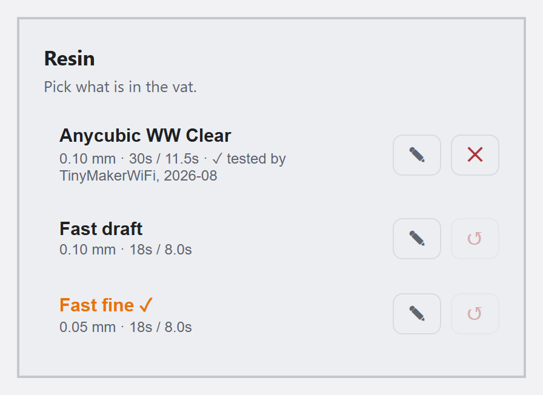
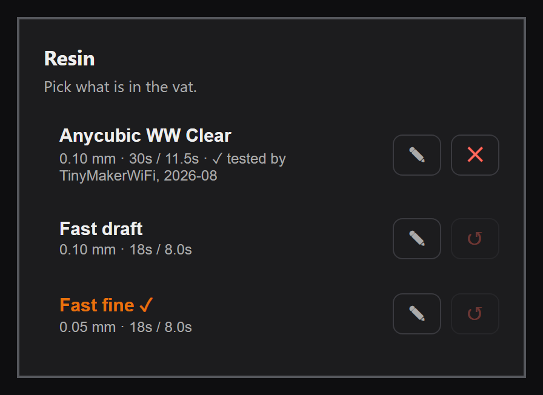
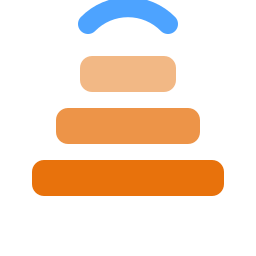

TinyMakerWifi › Resins
Pick a resin, tap once, and your printer is set up for it: exposure, base layers, lift and density, every number printed and measured on this machine.
Being measured right now. The numbers are working figures, not a published profile yet.
Finished profiles. Each one installs on the printer in one tap.
Samples waiting for plate time. A few already have working numbers above and are back here because the method has grown since.


Every resin tested here goes into the printer's resin library. Any TinyMaker owner installs it from the dashboard's Resin card in one tap, edits the numbers afterwards if their own vat asks for it, and gets a Buy link in the same row for the resins that carry a shop address.
The printer lists sixteen named profiles, four of them built in; the ticked one is what the next print uses. Exposure, bottom layers, lift and density travel with the profile, and the line tested by TinyMakerWiFi says which month the numbers were measured.
The same sequence, the same machine, written down. That is why two resins here can be compared at all.
All of it is printed on the same TinyMaker with the same film and the same UV panel. A different panel or a colder room shifts these numbers, which is exactly why they are measured rather than copied between printers.
The pixel is 0.1275 mm, so nothing thinner than about two pixels prints in any resin. Features are measured in pixels before they are blamed on chemistry - it has saved a full round on more than one resin.
Each step is recorded with its exposure, the resin used, the time it took and what the part looked like afterwards. The published profile is the last line of that record, not a separate opinion.
Consumption is worked out from the layer images and the resin's density, so density has to be measured - a known volume on a scale, once per bottle. Until then the card says the number came off the label.
When the sequence gains a step, earlier resins go back in the queue. Entries measured before the current method say so on their card instead of passing as finished work.
Tested and written by Viktoras Šidlauskas, who maintains the TinyMakerWifi firmware. The same hands, the same printer, the same notebook for every resin here.
Send a bottle and it goes through the same sequence. No fee, no agreement, no promise about the outcome: the numbers are published whichever way they come out.
The resin is listed under the name you use in your own shop, with a link to it. If you would rather see different wording or your own photo on the card, say so and it goes in.
The result is not a review - it is a working profile. A TinyMaker owner installs it in one tap and prints, instead of burning a tank finding the exposure for a colour screen themselves.
Quote the figures, link to the page, put them in your own settings table or on the product page. They were measured on one machine and that is stated, so nobody is misled either way.

If you want to link back, take the mark here - no need to ask: SVG · PNG 512. Point it wherever fits: the resin results if the link sits next to a product, or tinymakerwifi.com for the project itself.
To send a sample or ask anything, write to hello@tinyowllabs.com - or find me in the TinyMaker owners' group, where the results get discussed by the people actually printing with them.